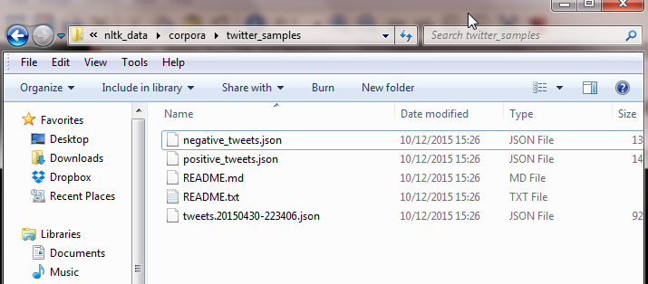

Practice Session: Sentiment Analysis with Twitter

0. Introduction to NLP and Sentiment Analysis
1. Natural Language Processing with NTLK
3. Build a sentiment analysis program
4. Sentiment Analysis with Twitter
5. Analysing the Enron Email Corpus
6. Build a Spam Filter using the Enron Corpus
Okay, so the practice session.
This contains a mixture of me teaching you stuff (like how to read Tweets in your Ntlk corpora), plus code you write yourself.
Sentiment Twitter.ipynb is the file you are working with.
Okay, since this is a practice session, I won’t explain everything. You are supposed to learn. I will cover the new stuff related to reading Twitter data.
This Twitter data is in the ntlk corpora folder, under twitter_samples.

nltk3
But you don’t have to worry about parsing json files. Ntlk gives us handy functions to read the data.
Warning: The way the data was collected was, the tweets were classified negative or positive based on smileys. So if the tweet contained : ) it was classified as positive. This will have ramifications for us later on.
Make sure you have the notebook open in a new tab, as I will only go over parts of it. I expect you to write the code for the rest yourself. If you get stuck, look at the last lesson, as the code is very similar.
twitter_samples.fileids()
['negative_tweets.json', 'positive_tweets.json', 'tweets.20150430-223406.json']
Like movie reviews, you can see the types of files-in this you have the negative, positive, and the complete list.
This is how you read the Twitter samples. I’m only showing you the negative file, but the process is the same for the positive.
strings = twitter_samples.strings('negative_tweets.json')
for string in strings[:5]:
print(string)
hopeless for tmr :(
Everything in the kids section of IKEA is so cute. Shame I'm nearly 19 in 2 months :(
@Hegelbon That heart sliding into the waste basket. :(
“@ketchBurning: I hate Japanese call him "bani" :( :(”
Me too
Dang starting next week I have "work" :(
I only print the first 5 tweets above.
The next steps are to rewrite the create_word_features() function, and then collect the negative and positive tweets.
You will get 5000 tweets in each category. Create the training list with 8000, and test with 2000 tweets.
Create a Naive Bayes classifier and test your algorithm.
I got an accuracy of 97%, which just looks wrong.
Why? Take a minute to think.
The original data contains smileys. So our machine learning algorithm can ignore the text, and just look at the smiley to give a positive or negative review. We need to remove the smileys.
I give you some code:
print(string)
print(string.replace(":", ""))
print(string.replace(":", "").replace(")", "").replace("(", ""))
@DanielOConnel18 you could say he will have egg on his face :-)
@DanielOConnel18 you could say he will have egg on his face -)
@DanielOConnel18 you could say he will have egg on his face -
The last line above,
print(string.replace(":", "").replace(")", "").replace("(", ""))
is what you will use in your code to remove the smileys.
You will need to recreate the negative and positive tweets, this time removing the smileys using the code above.
Re-run the Naive Bayes classifier. This time the accuracy goes down to 75%, but the results are more accurate as they use the actual tweet text, and not the presence of a smiley(which may not even be there).
This was a key learning feature: Make sure the data you work with is representative of what you are testing.
Test your classifier with real tweets about movies. Is it accurate?